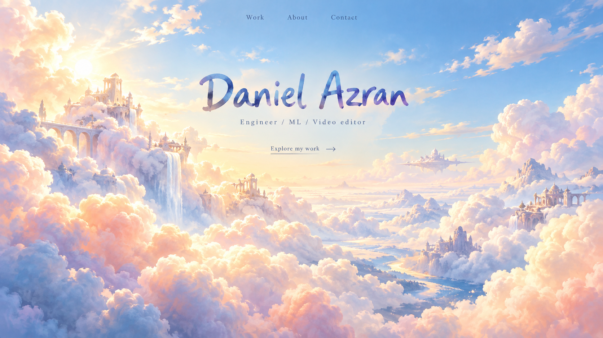
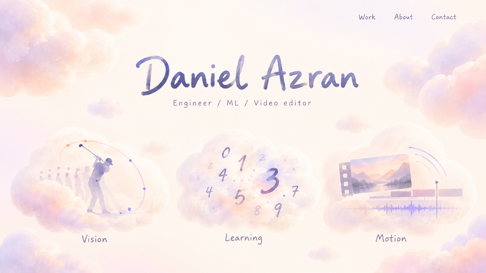

Cloud mockups
Four ways to explore fluffy forms, dreamy light, and pastel color. Click an image to see the original PNG, or save a copy to work with.
Generation prompts · Notes and video/editing skills

01 — Cotton sky
A spacious cloud world with warm light and painted lettering. The generated architecture adds a fantasy-world interpretation.


02 — Lilac cloud dream
Your handstand pose reimagined inside the cloud world, with light spreading beyond the figure.
03 — Cloud material playground
A material study: cloud lettering, a ring, a ribbon, a star, and floating masses. This is a reference sheet, not separate transparent assets.


04 — Fluffy interface
A cleaner direction where the interface's own forms feel cloudy, with less surrounding scenery.

All four are concept images. The original PNGs and exact prompts stay together in this folder so you can edit, compare, or request a variation.